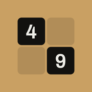

Tabela de Schulte online
Encontre os números em ordem, o mais rápido que puder. O tempo começa no seu primeiro toque. Grátis, no navegador, sem cadastro.
Seus melhores tempos ficam salvos só neste navegador.

Veja seu foco melhorar
Este tabuleiro te dá um tempo. O app 49 para iPhone mostra o que está por trás dele e acompanha sua evolução.
- Análise depois de cada jogo: onde você acelera, onde desacelera, quando perde o foco e quais números são mais difíceis para você
- Evolução ao longo do tempo: recordes, tendências e dados sobre seu ritmo e sua precisão
- Um Desafio Diário, níveis de Novato a Lenda e 539 conquistas
- Mais jeitos de jogar: Infinito e Contra o Relógio, tabuleiros até 11 × 11 e duelos ao vivo 1 contra 1 com amigos
Grátis para jogar.
O que é uma tabela de Schulte?
Uma tabela de Schulte é uma grade de números embaralhados que você encontra em ordem, o mais rápido possível. O nome vem de Walter Schulte, um psiquiatra alemão, e ela é usada há muito tempo como exercício de atenção, busca visual e leitura rápida. A tabela clássica é 5 × 5, com os números de 1 a 25.
Como jogar
- Escolha um tabuleiro. O 5 × 5 é o clássico; o 7 × 7 é o padrão no 49.
- Toque no 1, depois no 2, depois no 3, até o último número. O tempo começa no seu primeiro toque.
- Um toque errado conta como erro, mas não para o tempo, então continue.
- Para variar, conte de trás para frente: comece pelo maior número.
Como ficar mais rápido
- Mantenha os olhos perto do centro do tabuleiro e deixe a visão periférica achar o próximo número, em vez de ler linha por linha.
- Diga o próximo número na cabeça antes de procurar.
- Não se apresse depois de um erro. Um segundo de calma é mais rápido que três toques errados.
- Jogue um pouco todo dia. Treino curto e regular rende mais que uma sessão longa.
Perguntas
É grátis?
Sim. O tabuleiro desta página é grátis, sem conta e sem anúncios. O app 49 também é grátis para jogar.
Funciona no celular?
Sim, no celular, no tablet e no computador. No computador você também pode usar o teclado: vá até um número com Tab e aperte Enter.
A tabela de Schulte melhora o foco?
Seus tempos melhoram com a prática, e o exercício trabalha a atenção e a busca visual em que se apoia. É um jogo para praticar o foco, não um tratamento médico.
Qual é um bom tempo?
Depende do tabuleiro e de você, então compare com o seu próprio recorde, que esta página guarda. No app 49, os rankings do Game Center mostram como você se sai em relação a outros jogadores.